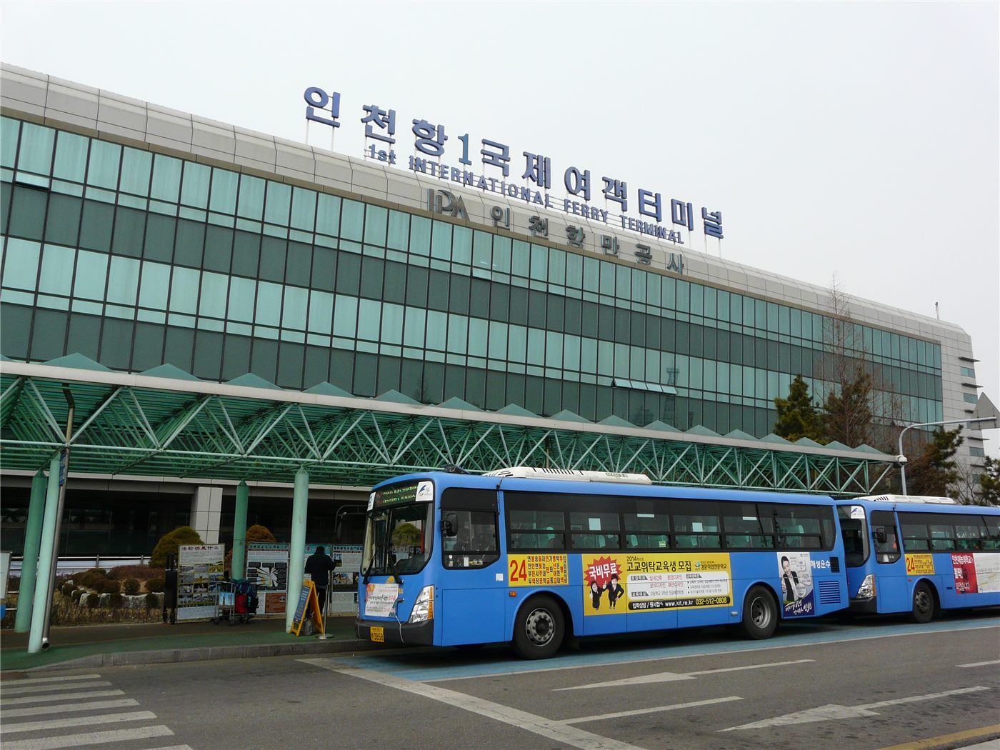

소삼통 새 규정 10월 1일 시행… 무료 위탁수하물 절반으로, 기내 반입은 유지
진먼·마쭈와 중국 대안을 잇는 이른바 ‘소삼통’ 항로의 수하물 규정이 10월 1일부터 바뀐다. 무료 위탁수하물 허용 중량이 절반으로 줄고, 기내 반입은 2개 17㎏ 기준이 유지된다.
전금문 기자 · 2026.08.19
橋대만

대만 진먼과 마쭈에서 중국 푸젠성 연안을 잇는 이른바 ‘소삼통’ 항로의 수하물 규정이 10월 1일부터 변경된다. 무료 위탁수하물 허용 중량이 기존의 절반 수준으로 조정되고, 기내 반입 수하물은 2개 17㎏ 기준이 그대로 유지된다.
광고 문의 · 300×250이 항로는 관광보다 생활 이동의 비중이 높다. 진먼·마쭈 주민의 친지 방문과 소규모 상거래, 학업과 의료 목적의 왕래가 꾸준히 이어져 왔고, 그만큼 수하물의 실제 사용 방식도 여행객과 다르다.
규정 변경의 영향은 반복 왕래자에게 집중된다. 한 번에 옮기던 물량을 나누어 옮기게 되면 왕복 횟수가 늘거나 초과 수하물 요금이 발생한다. 소량 물품을 취급하는 상인에게는 원가 구조가 바뀌는 문제다.
선사 측 설명은 운항 효율과 안전 기준에 맞추기 위한 조정이라는 취지다. 선박의 적재 여유와 승하선 시간 관리가 근거로 제시됐다. 다만 시행 시점이 추석 연휴와 가까워 초기 혼선을 우려하는 목소리도 있다.
이용자 입장에서 준비할 사항은 단순하다. 10월 1일 이후 출발 편에 대해서는 예약 시점과 무관하게 새 기준이 적용되는지, 아니면 예약일 기준의 경과 규정이 있는지 확인하는 것이다. 통상 이런 변경에는 안내 기간이 함께 공지된다.
진먼·마쭈와 대안을 오가는 이 항로는 양안 간 인적 교류의 실무적 지표로도 읽혀 왔다. 규정 하나의 변경이 정치적 의미로 확대 해석되는 경우가 있지만, 이번 건은 운송 조건의 조정으로 발표됐다.
출처·참고 (사실 확인용 — 본문은 직접 재작성)
· United Daily News·Mainland Affairs Council notices (2026.08.17~18)
· United Daily News·Mainland Affairs Council notices (2026.08.17~18)